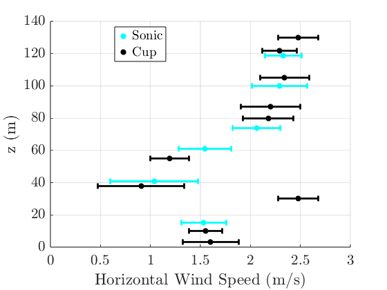
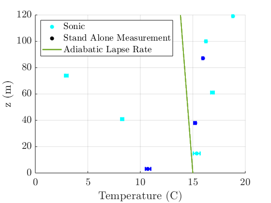
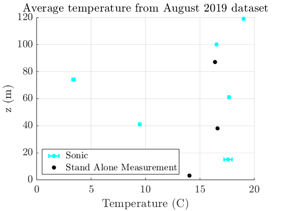
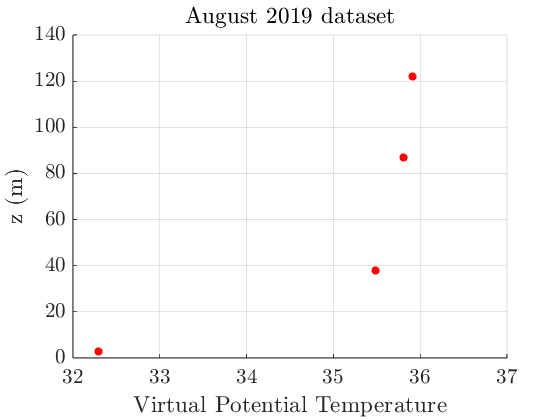
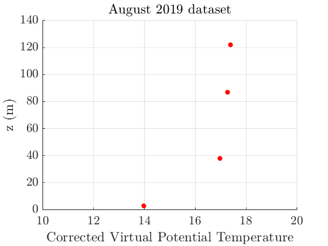

Contents
PREAMBLE
close all; clear variables; clc; set(groot, 'defaultTextInterpreter', 'Latex'); set(groot, 'defaultLegendInterpreter', 'Latex'); set(groot, 'defaultAxesTickLabelInterpreter','latex'); set(groot, 'defaultLegendInterpreter','latex'); set(groot, 'defaultTextFontSize', 12); set(groot, 'defaultAxesFontSize', 16); set(groot, 'defaultLineLineWidth', 2); set(groot, 'defaultFigureColor', 'white');
Loading Data
%REMEMBER TO CHANGE THIS IF ON WINDOWS cause apples hates me %fileDir = '/Users/christopherbianco/Desktop/School_Code/Wind Physics/HW1'; %Mac fileDir = 'C:\Users\Christopher\Desktop\School_Code\Wind Physics\HW1'; %Windows data = load(fullfile(fileDir, '08_28_2019_10_00_00_000.mat'));
Time conversion
%Convert UTC datenum to datetime thyme = data.time_UTC.val; time = NaT(size(thyme)); for ti = 1 : length(thyme) time(ti) = datetime(floor(thyme(ti)), 'ConvertFrom', 'datenum') ... + days(rem(thyme(ti),1)); % convert datenum to datetime object end time.TimeZone = 'Etc/UTC'; % add TimeZone field (UTC time) time.TimeZone = 'America/Denver'; % shift to NREL time zone
Part a: Horizontal wind speed profile
%Initialize measurement height sonic_heights = [15,41,61, 74, 100, 119]; U_av_sonic = NaN(1, length(sonic_heights)); U_std_sonic = NaN(1, length(sonic_heights)); cup_heights = [3, 10, 30, 38, 55, 80, 87, 105, 122, 130]; U_av_cup = NaN(1, length(cup_heights)); U_std_cup = NaN(1, length(cup_heights)); %Calculate horizontal wind speed from sonic anemometers for i = 1:length(sonic_heights) sonic_height = sonic_heights(i); U = sqrt(data.(strcat('Sonic_x_clean_',num2str(sonic_height),'m')).val.^2 + data.(strcat('Sonic_y_clean_',num2str(sonic_height),'m')).val.^2); U_av_sonic(i) = mean(U); U_std_sonic(i) = std(U); end %Extract horizontal wind speed from cup anemometers for i = 1:length(cup_heights) cup_height = cup_heights(i); %Now, we need to take into account the naming convention fn = fieldnames(data); matchIdx = contains(fn, 'Cup_WS_') & contains(fn, strcat(num2str(cup_height),'m')); match = fn(matchIdx); %Extract U U = data.(match{1}).val; %Do mean and standard deviation U_av_cup(i) = mean(U); U_std_cup(i) = std(U); end %Make the figure figure(1); hold on; xlabel('Horizontal Wind Speed (m/s)'); ylabel('z (m)'); grid on %Plot sonic e1 = errorbar(U_av_sonic, sonic_heights, U_std_sonic, 'horizontal', '*c', 'LineWidth',2); %Plot cup e2 = errorbar(U_av_cup, cup_heights, U_std_cup, 'horizontal', '*k', 'LineWidth',2); % Dummy plots for legend only h1 = plot(nan, nan, '*c', 'LineWidth', 2); h2 = plot(nan, nan, '*k', 'LineWidth', 2); % Legend legend([h1 h2], {'Sonic','Cup'}, 'Location', 'best') hold off
Part b and c: Temperature readings
%Initialize measurement height sonic_heights = [15,41,61,74,100,119]; temp_av_sonic = NaN(1, length(sonic_heights)); temp_std_sonic = NaN(1, length(sonic_heights)); solo_heights = [3, 38, 87]; temp_av_solo = NaN(1, length(solo_heights)); temp_std_solo = NaN(1, length(solo_heights)); %Extract temp from sonic anemometers for i = 1:length(sonic_heights) sonic_height = sonic_heights(i); temp = data.(strcat('Sonic_Temp_clean_', num2str(sonic_height), 'm')).val; temp_av_sonic(i) = mean(temp); temp_std_sonic(i) = std(temp); end %Extract temp from stand alone measurements for i = 1:length(solo_heights) solo_height = solo_heights(i); temp = data.(strcat('Air_Temp_', num2str(solo_height), 'm')).val; temp_av_solo(i) = mean(temp); temp_std_solo(i) = std(temp); end %Make figure figure(2); hold on; xlabel('Temperature (C)'); ylabel('z (m)'); grid on %Plot sonic e1 = errorbar(temp_av_sonic, sonic_heights, temp_std_sonic, 'horizontal', '*c', 'LineWidth',2); %Plot cup e2 = errorbar(temp_av_solo, solo_heights, temp_std_solo, 'horizontal', '*b', 'LineWidth',2); % Dummy plots for legend only h1 = plot(nan, nan, '*c', 'LineWidth', 2); h2 = plot(nan, nan, '*k', 'LineWidth', 2); %Define and plot the adiabatic lapse rate h = linspace(0,120,1000); lapse_rate = (-9.8/1000).*h + 15; h3 = plot(lapse_rate, h); % Legend legend([h1 h2 h3], {'Sonic','Stand Alone Measurement', 'Adiabatic Lapse Rate'}, 'Location', 'northwest') hold off %Based on these graphs, the temperature readings from the sonic anemometers %at z = 41m and 74m are quite low, and deviate wildly from all other %measurements. For that reason, these points look unreliable.
Part b and c short answer
%In terms of stability, if we ignore the temperature readings at z = 41m %and 74m, we can see that the average slope is more steep (more postive) %than the adiabatic lapse rate of -9.8 K/km. In other words, the lapse rate %is sub adiabatic, or even an inversion as the slope is actually positive overall. %This indicates static stability. Given that these %measurements were taken at 4am local time, this observation makes sense. %We would expect an stable mixing layer at this time. However, there is a %small degree of uncertainty. As mentioned previously, we have at least %two large outliers. However, the slope is clearly negative when discarding %those two measurements, so I am confident in this characterization.
Part d: August 2019
%Load data aug_data = load(fullfile(fileDir, '2019_August.mat')); %Do time conversion %Convert UTC datenum to datetime thyme_all = aug_data.all_data.Virtual_Potential_Temperature_3m.date; time_all = NaT(size(thyme_all)); for ti = 1 : length(thyme_all) time_all(ti) = datetime(floor(thyme_all(ti)), 'ConvertFrom', 'datenum') ... + days(rem(thyme_all(ti),1)); % convert datenum to datetime object end time.TimeZone = 'Etc/UTC'; % add TimeZone field (UTC time) time.TimeZone = 'America/Denver'; % shift to NREL time zone %From manual inspection, the entry we want to look at in the large dataset %is 3913 aug_temp_ave_sonic = NaN(1, length(sonic_heights)); aug_temp_std_sonic = NaN(1, length(sonic_heights)); aug_temp_ave_solo = NaN(1, length(solo_heights)); %Extract air temp from sonic anemometers for i = 1:length(sonic_heights) sonic_height = sonic_heights(i); aug_temp_ave_sonic(i) = aug_data.all_data.(strcat('Raw_Sonic_Temp_',num2str(sonic_height),'_mean')).val(3913); aug_temp_std_sonic(i) = aug_data.all_data.(strcat('Raw_Sonic_Temp_',num2str(sonic_height),'_sdev')).val(3913); end %Extract air temp from stand alone measurements for i = 1:length(solo_heights) solo_height = solo_heights(i); aug_temp_ave_solo(i) = aug_data.all_data.(strcat('Air_Temperature_',num2str(solo_height),'m')).val(3913); end %Make plot figure(3) xlabel('Temperature (C)'); ylabel('z (m)'); title('Average temperature from August 2019 dataset') grid on hold on %Plot temperatures errorbar(aug_temp_ave_sonic, sonic_heights, aug_temp_std_sonic, 'horizontal', '*c', 'LineWidth',2) plot(aug_temp_ave_solo -273.15 , solo_heights, '*k', 'LineWidth',2) legend({'Sonic','Stand Alone Measurement'}, 'Location', 'southwest') hold off solo_heights = [3,38,87,122]; %Extract virtual potential temp aug_vpt = NaN(1, length(solo_heights)); for i = 1:length(solo_heights) solo_height = solo_heights(i); aug_vpt(i) = aug_data.all_data.(strcat('Virtual_Potential_Temperature_',num2str(solo_height),'m')).val(3913); end %Make plot figure(4) xlabel('Virtual Potential Temperature'); ylabel('z (m)'); xlim([32 37]); title('August 2019 dataset') grid on hold on plot(aug_vpt -273, solo_heights, '*r', 'LineWidth',2) hold off 
d short response
%As can be seen from the temperature data, the virtual potential %temperature (VPT) is once again much higher than the raw temperature %Again, his is likely because, %according to the report, a p0 of 100 kpa was used to calculate VPT. %However, the data was taken at an elevation of 6000 feet. According to %engineering toolbox, the pressure at 6000 feet is 81.2 kpa, much lower. If %this value was used, the temperature values would be lower and likely more %sensical.
Part e
We can correct make our same correction to the virtual potential temperature measurements by multiplying them by the factor we get from changing p0 to 82 kpa. To find
%This, we take (82/100)^(R/Cp), where R/Cp is given as 0.286. Thus, %multiplying by 0.94 should give us better temperature measurements. figure(5) xlabel('Corrected Virtual Potential Temperature'); ylabel('z (m)'); xlim([10 20]) title('August 2019 dataset') grid on hold on plot(aug_vpt.*0.94 -273, solo_heights, '*r', 'LineWidth',2) hold off %As can be seen, this gives us much more reasonable temperature values. The %slope here is positive, indicating a sub-adiabatic, or highly stable, %bondary layer. This matches up with the conclusions from the temperature %data from part c. These values are also much closer to the values from %part c, but don't have the same two values that are much lower than the %rest, indicating that those two are in fact outliers.